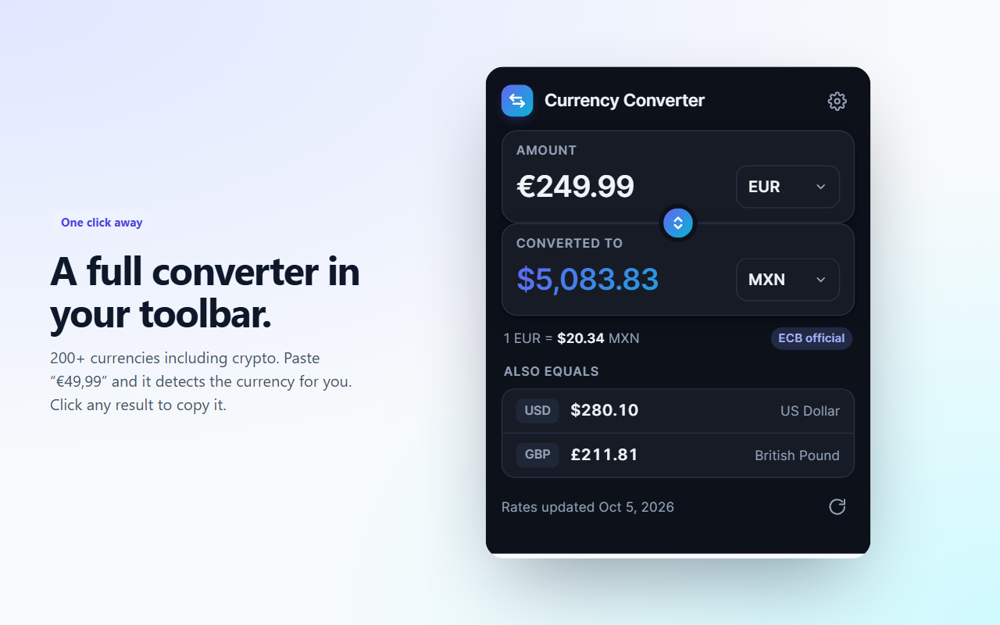
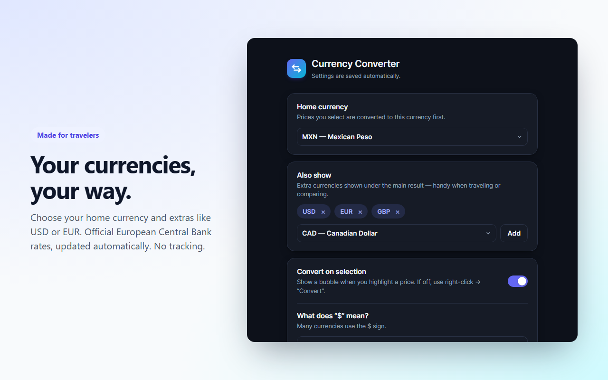

Three ways to convert
Currency Converter – Instant Prices is a browser extension that turns foreign prices into your home currency right where you see them.
Highlight a price
Select “€49,99”, “$1,299” or “£12” on any page and a bubble shows it in your currency. Click a value to copy it.
Right-click → Convert
Works even on plain numbers without a symbol — the extension uses the website’s currency.
Toolbar converter
Open the full converter with 200+ currencies. It is pre-filled with whatever price you selected.


Made for shoppers and travelers
Anywhere a price appears in a currency that isn’t yours.
Online shopping
Amazon, eBay, AliExpress and stores abroad.
Hotels
Compare nightly rates on Booking, Airbnb and hotel sites.
Flights & trips
Fares, tours, car rentals and tickets.
Work & freelancing
Invoices, salaries and software subscriptions.
Smart price detection, reliable rates
It understands the way prices are actually written around the world:
$1,299.00€49,99US$ 251.234,56 EUR£12¥3,980R$ 99AU$1,799S/ 15025 dollars
Official ECB rates
European Central Bank reference rates take priority, plus open data for 200+ currencies and major cryptocurrencies.
Always fresh, works offline
Rates update automatically every 6 hours and are cached, so conversions are instant.
Private by design
Selected text never leaves your browser. No accounts, analytics or ads. Privacy policy.
Frequently asked questions
How do I convert prices while shopping on a foreign website?
Install the free Currency Converter – Instant Prices extension for Chrome or Edge, choose your home currency, and highlight any price on the page. A small bubble instantly shows the amount in your currency, without opening a new tab or searching on Google.
Is the Currency Converter extension free?
Yes. It is completely free, with no ads, no account and no in-app purchases.
Where do the exchange rates come from?
Official European Central Bank reference rates (via the Frankfurter API) take priority. Other currencies and cryptocurrencies come from the open fawazahmed0 currency-api dataset. Rates refresh automatically every 6 hours.
Which currencies and price formats does it understand?
More than 200 currencies. It detects symbols such as $, €, £, ¥, R$, AU$ and S/, ISO codes such as USD, EUR, MXN and GBP, words like “dollars” or “euros”, and both 1,234.56 and 1.234,56 number formats.
Can I use it to compare hotel and flight prices when traveling?
Yes. Highlight the nightly rate on a hotel site or the fare on an airline site and see it in your home currency plus extra currencies such as USD and EUR side by side.
What does the $ sign mean on different websites?
Because many countries use $, the extension infers it from the website domain (.mx is Mexican peso, .ca is Canadian dollar, .ar is Argentine peso, others US dollar). You can also force a specific currency in Settings.
Does the extension collect my data?
No. Selected text is processed locally in your browser and never sent anywhere. The only network requests download public exchange-rate files. There is no analytics or tracking.
Are the rates the same my bank will charge?
No. They are mid-market reference rates for comparison. Banks and card issuers usually add a margin or fees.
Stop googling exchange rates.
Install once, then just highlight prices.